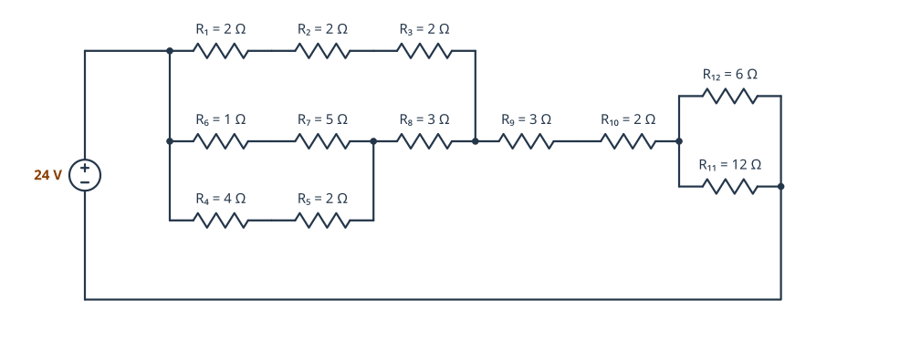
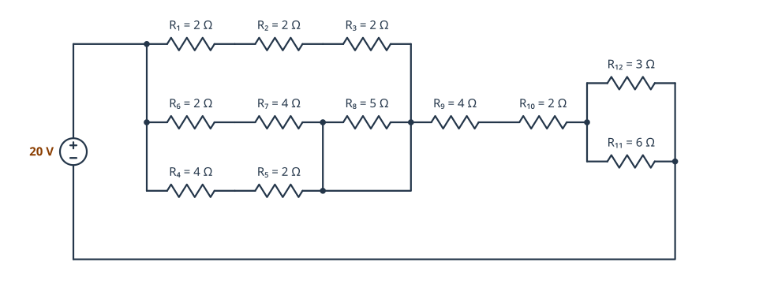
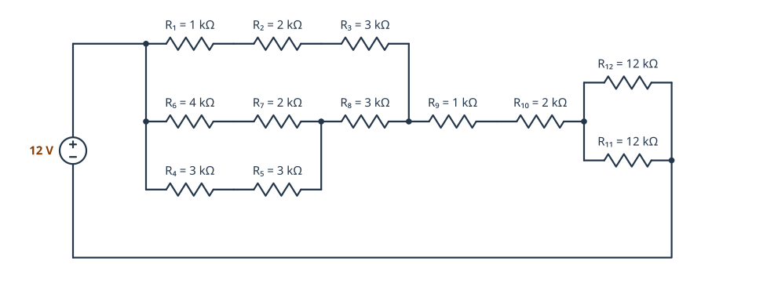
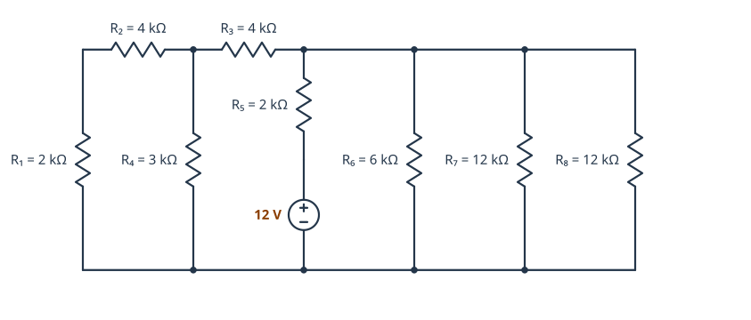
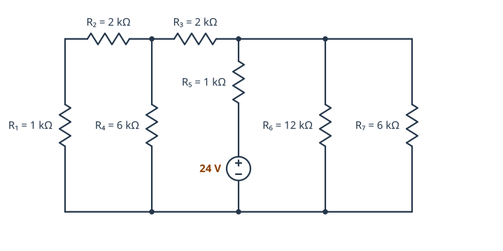
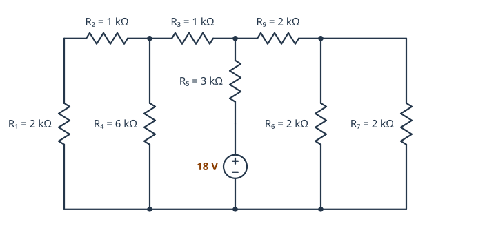
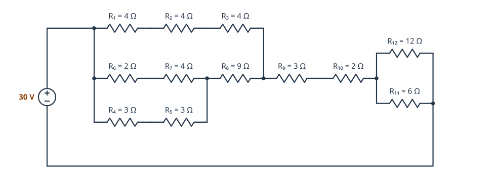

0221 · Montaje y mantenimiento de equipo · Tema 1
Repaso para el examen de circuitos
Qué te vas a encontrar
Problemas de circuitos mixtos como los de esta página. En cada uno se pide la resistencia total, la intensidad total y la intensidad en alguna resistencia concreta. Para que la respuesta cuente entera:
- Explica el proceso: qué resistencias juntas y por qué están en serie o en paralelo.
- Escribe la fórmula antes de poner los números.
- Pon la unidad en todos los resultados (Ω, kΩ, A, mA, V).
- Nombra las resistencias como en el esquema (R₁, R₂…), también las equivalentes: «R₆₇ = R₆ + R₇ = 6 Ω».
Método paso a paso
- Marca los nudos. Todo lo unido solo por cable es el mismo punto. Busca cables que unan los dos extremos de una resistencia: si los hay, esa resistencia está cortocircuitada y no cuenta.
- Busca la serie más interna: dos resistencias seguidas en cuya unión no sale nada más. Súmalas.
- Busca los paralelos: resistencias o ramas que van entre los mismos dos puntos. Para dos, usa (R₁·R₂)/(R₁+R₂); para más, 1/R = 1/R₁ + 1/R₂ + …
- Redibuja el circuito con la equivalente y repite hasta que quede una sola resistencia: la R total.
- Ley de Ohm a todo el circuito: I = V / R total. Si R está en kΩ, la intensidad sale en mA.
- Vuelve hacia atrás para la corriente de una resistencia: la tensión de un paralelo es V = I · Rparalelo, y cada rama lleva I = V / Rrama. Comprueba que las ramas suman la corriente que entra.
Errores que más puntos quitan
| Error | Cómo evitarlo |
|---|---|
| Sumar en paralelo o hacer la inversa en serie. | Un paralelo siempre da menos que la resistencia más pequeña. Si te sale más, está mal. |
| Mezclar Ω y kΩ. | Pásalo todo a la misma unidad antes de operar. 12 V / 4 kΩ = 3 mA. |
| Pensar que la fuente siempre está a la izquierda. | Si está en medio, mira el circuito desde la fuente: lo que tiene en serie, y lo que hay a cada lado entre los dos cables. |
| No ver un cable que cortocircuita una resistencia. | Sigue con el dedo cada cable hasta el final antes de empezar. |
| Dar la corriente total como corriente de una rama. | En un paralelo la corriente se reparte: calcula primero la tensión del paralelo. |
Tipo 1 · Bloque de ramas
Un bloque de tres ramas, dos de ellas unidas por un cable intermedio, seguido de resistencias en serie y de un paralelo final. Empieza por el bloque: es lo más interno.
1. Bloque de ramas · 24 V
Nombra las resistencias como en el esquema y calcula:
- La resistencia total del circuito.
- La intensidad total.
- La intensidad en R₁₁ (I₁) y en R₁₂ (I₂).
- La intensidad en R₄.


Comprueba tu resultado
- R total = 12 Ω
- I total = 2 A
- I₁ = 0,67 A · I₂ = 1,33 A
- I(R₄) = 0,5 A
Ver la resolución paso a paso
- Ramas del bloque: R₆ + R₇ = 1 + 5 = 6 Ω y R₄ + R₅ = 4 + 2 = 6 Ω. Las dos acaban en el mismo punto (el cable vertical las une), así que están en paralelo: 6 ∥ 6 = 3 Ω.
- Ese conjunto está en serie con R₈: 3 + 3 = 6 Ω.
- Rama de arriba: R₁ + R₂ + R₃ = 6 Ω. En paralelo con la anterior: 6 ∥ 6 = 3 Ω.
- Final: R₁₁ ∥ R₁₂ = (12 · 6) / (12 + 6) = 4 Ω.
- R total = 3 + R₉ + R₁₀ + 4 = 3 + 3 + 2 + 4 = 12 Ω → I = V / R = 24 / 12 = 2 A.
- Tensión en el paralelo final: V = 2 · 4 = 8 V → I₁ = 8 / 12 = 0,67 A · I₂ = 8 / 6 = 1,33 A (suman 2 A ✔).
- En el bloque, las dos ramas valen 6 Ω: se reparten 1 A cada una. La de abajo pasa por R₈ y se vuelve a repartir a partes iguales: I(R₄) = 0,5 A.
2. Bloque de ramas con resistencia escondida · 20 V
Nombra las resistencias como en el esquema y calcula:
- La resistencia total del circuito.
- La intensidad total.
- La intensidad en R₈.
- La intensidad en R₁₁ (I₁) y en R₁₂ (I₂).
Pista: Sigue el cable que sale de R₅ hasta el final.


Comprueba tu resultado
- R total = 10 Ω
- I total = 2 A
- I(R₈) = 0 A: está cortocircuitada
- I₁ = 0,67 A · I₂ = 1,33 A
Ver la resolución paso a paso
- El cable que sale de R₅ sube hasta la unión de R₇ y R₈ y también llega al lado derecho del bloque. Los dos extremos de R₈ están unidos por cable: R₈ está cortocircuitada y por ella no pasa corriente.
- Sin R₈, las tres ramas del bloque van entre los mismos dos puntos: R₁ + R₂ + R₃ = 6 Ω, R₆ + R₇ = 6 Ω y R₄ + R₅ = 6 Ω → 1/R = 1/6 + 1/6 + 1/6 → 2 Ω.
- Final: R₁₁ ∥ R₁₂ = (6 · 3) / (6 + 3) = 2 Ω.
- R total = 2 + 4 + 2 + 2 = 10 Ω → I = 20 / 10 = 2 A.
- Tensión en el paralelo final: 2 · 2 = 4 V → I₁ = 4 / 6 = 0,67 A · I₂ = 4 / 3 = 1,33 A.
3. Bloque de ramas en kiloohmios · 12 V
Nombra las resistencias como en el esquema y calcula:
- La resistencia total del circuito.
- La intensidad total, en mA.
- La intensidad en R₁₁.
- La intensidad en R₈ y en R₁.


Comprueba tu resultado
- R total = 12 kΩ
- I total = 1 mA
- I(R₁₁) = 0,5 mA
- I(R₈) = 0,5 mA · I(R₁) = 0,5 mA
Ver la resolución paso a paso
- R₆ + R₇ = 6 kΩ y R₄ + R₅ = 6 kΩ, en paralelo: 3 kΩ. Más R₈: 3 + 3 = 6 kΩ.
- Rama de arriba: 1 + 2 + 3 = 6 kΩ. Con la anterior: 6 ∥ 6 = 3 kΩ.
- R₁₁ ∥ R₁₂ = 12 ∥ 12 = 6 kΩ.
- R total = 3 + 1 + 2 + 6 = 12 kΩ → I = 12 V / 12 000 Ω = 0,001 A = 1 mA.
- R₁₁ y R₁₂ son iguales: se reparten 0,5 mA cada una.
- En el bloque, las dos ramas valen 6 kΩ: 0,5 mA por la de arriba (R₁) y 0,5 mA por la de abajo, que es la que pasa por R₈.
Tipo 2 · La fuente en medio
La fuente no está en un extremo, sino en una rama central con una resistencia en serie. Mira el circuito desde la fuente: su corriente pasa por R₅, llega al cable de arriba y vuelve por el de abajo repartida entre lo que hay a la izquierda y a la derecha. Esos dos lados están en paralelo entre sí.
4. Fuente en medio · 12 V
Nombra las resistencias como en el esquema y calcula:
- La resistencia total que «ve» la fuente.
- La intensidad total, en mA.
- La intensidad en R₄ y en R₆.


Comprueba tu resultado
- R total = 4 kΩ
- I total = 3 mA
- I(R₄) = 0,67 mA · I(R₆) = 1 mA
Ver la resolución paso a paso
- Mira el circuito desde la fuente. Toda su corriente pasa por R₅ y llega al cable de arriba. De ahí puede ir hacia la izquierda o hacia la derecha, y todo vuelve por el cable de abajo.
- Izquierda: R₁ y R₂ están en serie (en su unión no hay nada más): 2 + 4 = 6 kΩ. En paralelo con R₄: 6 ∥ 3 = 2 kΩ. Más R₃: 6 kΩ.
- Derecha: 1/R = 1/6 + 1/12 + 1/12 = 4/12 → 3 kΩ.
- Izquierda y derecha van entre los mismos dos cables: 6 ∥ 3 = 2 kΩ. Más R₅: R total = 4 kΩ.
- I = 12 V / 4 000 Ω = 0,003 A = 3 mA. Tensión entre los cables: 3 mA · 2 kΩ = 6 V.
- Derecha: I(R₆) = 6 V / 6 kΩ = 1 mA. Izquierda: 6 V / 6 kΩ = 1 mA, que deja 1 mA · 2 kΩ = 2 V en R₄ → I(R₄) = 2 / 3 = 0,67 mA.
5. Fuente en medio con dos ramas · 24 V
Nombra las resistencias como en el esquema y calcula:
- La resistencia total.
- La intensidad total, en mA.
- La intensidad en R₃ y en R₇.


Comprueba tu resultado
- R total = 3 kΩ
- I total = 8 mA
- I(R₃) = 4 mA · I(R₇) = 2,67 mA
Ver la resolución paso a paso
- Izquierda: R₁ + R₂ = 3 kΩ, en paralelo con R₄: 3 ∥ 6 = 2 kΩ. Más R₃: 4 kΩ.
- Derecha: R₆ ∥ R₇ = 12 ∥ 6 = 4 kΩ.
- 4 ∥ 4 = 2 kΩ. Más R₅: R total = 3 kΩ → I = 24 / 3 000 = 8 mA.
- Tensión entre los cables: 8 mA · 2 kΩ = 16 V. Izquierda: 16 / 4 kΩ = 4 mA, que es la que pasa por R₃. I(R₇) = 16 / 6 kΩ = 2,67 mA.
6. Fuente en medio con serie a la derecha · 18 V
Nombra las resistencias como en el esquema y calcula:
- La resistencia total.
- La intensidad total.
- La intensidad en R₉ y en R₄.


Comprueba tu resultado
- R total = 4,5 kΩ
- I total = 4 mA
- I(R₉) = 2 mA · I(R₄) = 0,67 mA
Ver la resolución paso a paso
- Izquierda: R₁ + R₂ = 3 kΩ ∥ R₄ = 6 kΩ → 2 kΩ. Más R₃: 3 kΩ.
- Derecha: R₆ ∥ R₇ = 1 kΩ. Más R₉, que está en serie con ellas: 3 kΩ.
- 3 ∥ 3 = 1,5 kΩ. Más R₅: R total = 4,5 kΩ → I = 18 / 4 500 = 4 mA.
- Tensión entre los cables: 4 mA · 1,5 kΩ = 6 V. Cada lado (3 kΩ) lleva 2 mA: I(R₉) = 2 mA.
- Izquierda: 2 mA · 2 kΩ = 4 V en R₄ → I(R₄) = 4 / 6 = 0,67 mA.
Simulacro de examen
Tiempo: 50 minutos. Resuelve los ejercicios explicando razonadamente el proceso, indicando las fórmulas utilizadas y las unidades de todos los resultados. Si quieres hacerlo en papel, pulsa «Imprimir / guardar PDF».
Ejercicio 1 (3 puntos)
Teniendo en cuenta el siguiente circuito (30 V), y nombrando las resistencias como en el esquema, se pide:


- Calcular la resistencia total del circuito. 1 punto.
- Calcular la intensidad total del circuito. 1 punto.
- Calcular la intensidad en R₁₁ (I₁), en R₁₂ (I₂) y en R₁. 1 punto.
Ejercicio 2 (3 puntos)
Teniendo en cuenta el siguiente circuito (15 V), y nombrando las resistencias como en el esquema, se pide:

- Calcular la resistencia total del circuito. 1 punto.
- Calcular la intensidad total del circuito. 1 punto.
- Calcular la intensidad en R₄ y en R₇. 1 punto.
Resultados del simulacro (ábrelo al terminar)
- Ejercicio 1: R total = 15 Ω · I total = 2 A · I₁ = 1,33 A · I₂ = 0,67 A · I(R₁) = 1 A
- Ejercicio 2: R total = 3 kΩ · I total = 5 mA · I(R₄) = 1,25 mA · I(R₇) = 1,67 mA
Si no te coincide algún resultado, rehaz el ejercicio siguiendo el método de arriba y pregunta en clase antes del examen.
Más práctica
- Boletín 2 · Circuitos mixtos: los del boletín manuscrito.
- Boletín 4 · Mixtos avanzados: más largos, con corrientes de rama.
- Boletín 5 · Circuitos enrevesados y el taller de nudos, para entrenar a ver qué está en serie y qué en paralelo.